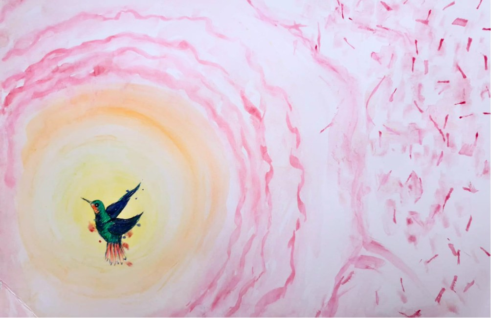
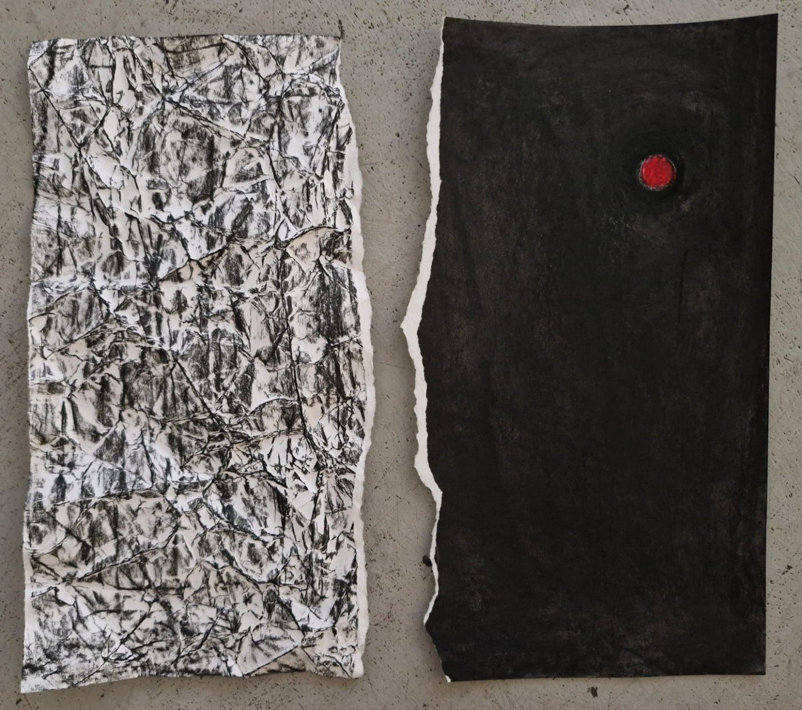

Art psychotherapy
What is art psychotherapy?
Art psychotherapy, also called art therapy, offers a space to express yourself in a playful and curious way. We work collaboratively, adapting as your needs change, with the aim of fostering a sense of safety in the therapeutic relationship.

Sometimes it's difficult to put into words what we're feeling. Making art with a variety of materials can take the place of words and can help with communication.
The art psychotherapist helps you explore emotions without judging or controlling how you make images. You choose what you make, and how much you talk about your images. The art psychotherapist works with you to build a therapeutic relationship that feels supportive for you.
At times, things may come up that feel difficult or unsettling. Art-making can offer another way to share feelings, which some people find easier than words alone, and may also help with difficulties you're experiencing.

How might it help?
- Exploring ways to manage intense emotions and relationship difficulties
- Making sense of physical or mental health difficulties
- Reflecting on questions of identity and who you are, both as an individual and within shifting social and cultural contexts
- Help to process traumatic experiences
- A creative outlet for your feelings
- Building self-confidence through self-expression
- Recognising what you might need
- Exploring difficulties that can come with being neurodivergent, including sensory differences such as being more or less sensitive to touch, texture, sound or colour. Working with different art materials can be a gentle way to discover what feels comfortable, soothing or overwhelming for you.
Play doesn't come naturally to everyone, especially adults. Learning to play through art can help you grow in other areas of your life too.
Do I need to be good at art?
No. There is no right or wrong way to make art in therapy, and your artwork won't be judged.
Confidentiality
Your images and anything you share in sessions are treated as confidential. Like all registered art psychotherapists, I take part in regular clinical supervision to make sure the work is safe and of good quality. With your consent, I may discuss our work, and sometimes bring examples of your artwork, to confidential supervision. Your name and personal details are never shared alongside your images.
Artwork made in sessions is stored securely. There are limits to confidentiality if I'm worried about your safety or someone else's, and we'll talk about these before sessions begin.
What to expect
- A first conversation. We talk about what you're hoping for and whether this feels like a good fit, and you can ask any questions.
- An agreement. If you decide to go ahead, we'll talk through confidentiality and therapeutic boundaries together, with the aim of reaching a mutual, professional agreement. This is set out in a written contract, which also explains what happens if you're struggling.
- Sessions at your pace. You choose what to make and how much to share.
- Telling me what isn't working. I actively invite you to let me know when something doesn't feel right or isn't working for you, whether that's in a session or about the therapy more generally. We can then explore together what might work better.